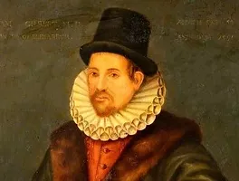
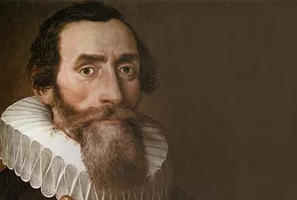
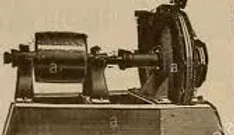

1300 y 1750
¿Dónde se encuentra ubicado?
Europa se convertirá en el centro de conocimiento, tras haber sufrido guerras en los diferentes reinos alrededor de 1348, debido a las fuertes propagaciones de la peste negra y las hambrunas. Además, surge un nuevo orden social, que pasó del feudalismo al absolutismo monárquico; mas conocido como Edad moderna.
Primeros pensadores
-
LEONARDO DA VINCI (1452 - 1519)
Arquitecto, inventor fue uno de los inventores mas relevantes de su época, entre sus inventos más destacados están:
- Bomba centrífuga
- Cañón que se carga por la culata
- Tornillo cónico
- Submarino
- Compás etc...
-
NICOLAS COPÉRNICO (1473-1543)
Fue considerado el fundador de la astronomía moderna, las bases que el dejo sirvió para que Newton siguiera avanzando con la revolución astronómica. Una de sus teorías es que los planetas giran alrededor del sol (Teoría Heliocéntrica).
-
TYCHO BRAHE (1546-1602)
Astrónomo danés considerado el más grande observador del cielo, diseñó instrumentos astronómicos para ver y medir la posición de las estrellas y los planetas.
-
WILLIAM GILBERT (1544-1603)
Físico y Médico ingles pionero en el estudio experimental en de los fenómenos electrostático y magnético clasifico los productos en aislantes y conductores.
-
JOHANNES KEPLER ( 1571- 1630)
Matemático y astrónomo alemán, conocido fundamentalmente por sus leyes de movimiento de los planetas en su orbital alrededor del sol, planto teorías como las que los planetas tienen movimientos elípticos alrededor del sol.
 -
GALILEO GALILEI (1564-1642)
Fue un filósofo natural, químico, físico e inventor ingles. Entre las aportaciones más importantes están la formulación correcta de la teoría de la elasticidad. Inventó el microscopio con el que hizo observaciones celestes, siendo la más destacada, el descubrimiento de los satélites de Júpiter.
-
ROBERT BOYLE (1627-1691)
En 1659, con la ayuda de Robert Hooke, descubrió la ley que rige el comportamiento de los muelles, perfeccionó la bomba de aire para hacer el vacío que se utilizó en la minería para eliminar el agua de las galerías en las que trabajan los mineros. Definió la química como una ciencia y la primera definición moderna de elemento químico.
-
ROBERT HOOKE (1635-1703)
Perfeccionó el microscopio, el aparato que le permitía ver en los seres del universo. Inventó, además, una gran cantidad de instrumentos (barómetro de cuadrante, el primer higrómetro, un anemómetro, etc., todos para conocer los cambios meteorológicos).
-
THOMAS NEWCOMEN (1663-1729)
Fue el que dio gran paso de la denominada Revolución industrial, periodo histórico caracterizado por un radical cambio en los procesos de producción, comunicación y transporte, pues el empleo del motor de vapor permitió reemplazar la energía muscular de hombres y animales, en energía mecánica producida por el vapor.
-
ISAAC NEWTON (1642-1727)
Dio a conocer las leyes de la mecánica y la gravitación universal, su explicación de la descomposición de la luz. Newton aportó a la historia de la ciencia:
- Fuerza centrípeta
- Descomposición de la luz en colores
- Gravitación universal
- Leyes del movimiento
- Compás etc...
- Etc.
Inventos
Algunos de los inventos que encontramos son:
-
Bombas Centrifugas
La bomba centrifuga consiste en un elemento móvil denominado impulsor, donde los alabes dirigen el movimiento de las partículas de fluido. El impulsor gira en una cámara cerrada denominada caja o cascara debido a la energía suministrada por el motor, el liquido contenida entre los alabes por efecto de la fuerzas centrifugas incrementa su energía cinética la cual se transforma particularmente en energía potencial en la carcasa de la bomba.
 -
Telescopio - Microescopio
También Galileo Galilei presentó su microscopio óptico en 1609 utilizando un diseño basado en la combinación de una lente cóncava junto con una lente convexa. Galileo Galilei llegó a este resultado modificando uno de sus telescopios y quizá sin tener conocimiento del instrumento inventado por Zacharias Janssen. En 1619 Cornelius Drebbel presentó su diseño con dos lentes convexas. Esto hace pensar que también alguno de ellos dos podría haber inventado el microscopio antes que Zacharias Janssen.
No es posible afirmar con absoluta certeza quién fue el verdadero inventor del microscopio. Existen bastantes fuentes que señalan a Zacharias Janssen como legítimo inventor del microscopio compuesto en el año 1590. Sin embargo, otros indicios indican que el verdadero inventor podría haber sido Hans Lippershey.
-
Enciclopedia
La idea de la Enciclopedia surgió cuando el editor francés André Le Breton quiso publicar una traducción de la Cyclopaedia Británica, elaborada por Ephraim Chambers en 1728. Para llevar a cabo la tarea, se dirigió primero a John Mills y el abate Jean Paul de Gua de Malves.
Ambos abandonaron el proyecto, por lo que Le Breton optó por dejarla en manos de Diderot y D’Alembert en 1742. Su incorporación sería vital para transformar el proyecto de una mera traducción a una fuente de conocimiento mucho más amplia y destinada a la expansión de conocimientos. -
Submarino
El inventor del submarino es el holandés Cornelius Drebbel en el año 1602 en Inglaterra. Durante 4 años, de 1620 a 1624, puso a prueba varias veces con éxito, un artefacto sumergible tripulado como el que William Bourne había diseñado. Cornelius Drebbel es el inventor de submarino Esta embarcación, el primer submarino digno de tal nombre, se movía entre los 4 y 5 metros de profundidad a través del río Támesis. Se cuenta que, sin pruebas contundentes, que el rey Jaime I de Inglaterra, hizo una breve excursión a bordo. Se dice que, Drebbel aseguró la supervivencia de sus pasajeros gracias a un gas que él mismo había compuesto. Aunque vistos los escasos conocimientos sobre gases de la época, la historia parece sospechosa.

-
El Compás
La costumbre de beber café surgió hacia el siglo XV en la península arábiga. Allí y en tierras otomanas se hicieron muy populares las cafeterías. Estos establecimientos no llegarían a Europa hasta principios de la Edad Moderna, cambiando no solo el modo cómo la gente comía y bebía, sino creando nuevas maneras de interacción social.
-
El cañón
La primera vez que se tiene noticia del uso del papel moneda es en el s. VII. Fue un gran e importante avance respecto a las monedas hechas de metales preciosos, ya que era mucho más fácil de transportar con el consiguiente beneficio para los mercaderes. Sin embargo, el concepto de otorgar valor a una hoja de papel marcada no se hizo popular. Los Mongoles en el siglo XIII trataron de introducir el papel moneda en Oriente Medio pero fue un fracaso. Los billetes de banco no circularían por Europa hasta el s. XVII.

-
Máquina de vapor
Con antecesoras desde la antigüedad, actualmente se considera que la auténtica máquina a vapor fue inventada por el herrero inglés Thomas Newcomen, y se utilizó para extraer el agua de las minas de carbón, que se inundaban constantemente. Este aparato fue el principal impulsor de la Revolución Industrial, que trajo al mundo profundos cambios sociales y tecnológicos. Posteriormente fue perfeccionado por James Watt, quien ideó un condensador separado, no incluido, como en la máquina de Newcomen, lo que permitió que fuera más eficaz y consumiera solo la tercera parte de carbón que la de Newcomen.
-
Cronómetro
El primer cronómetro fue marino, ya que el reloj de péndulo normal no servía en los barcos, pues el movimiento de las olas lo descompensaba. Su autor fue el inglés John Harrison.
-
Máquina de escribir
Su inventor fue Henry Mill, quien patentó un aparato con el cual era posible imprimir las letras una tras otra, aunque nadie se interesó, porque los secretarios tomaban las cartas mediante la taquigrafía (conocida desde la época de los romanos), y después las transcribían a mano.
-
Ascensor
El primero conocido corresponde al construido en el Palacio de Versalles para el Rey Luis XV. Compensado por un sistema de pesas, y accionado manualmente, el ascensor transportaba al monarca con absoluta privacidad de un piso a otro